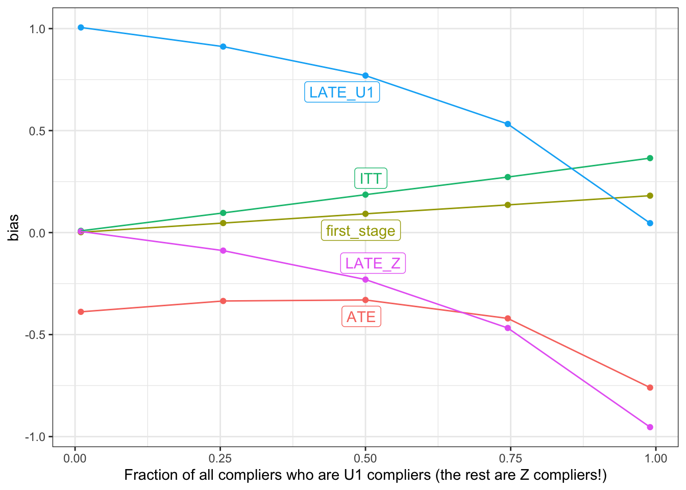

We often think of an instrumental variable (\(Z\)) as a random shock that generates exogenous variation in a treatment of interest \(X\). The randomness of \(Z\) lets us identify the effect of \(X\) on \(Y\), at least for units for which \(Z\) perturbs \(X\) in a way that’s not possible by just looking at the relationship between \(X\) and \(Y\). But surprisingly, we think, if effects are constant the instrumental variables estimator can be consistent for the effect of \(X\) on \(Y\) even when the relationship between the instrument (\(Z\)) and the endogenous variable (\(X\)) is confounded (for example, Hernán and Robins 2006). That’s the good news. Less good news is that when there is effect heterogeneity you can get good estimates for some units but it can be hard to know which units those are (Swanson and Hernán 2017). We use a declaration and diagnosis to illustrate these insights.
Consider the causal graph below (a directed acyclic graph, or DAG). Here \(U_2\) confounds the relationship between \(X\) and \(Y\). That’s the usual thing and the reason for why you need something like an instrument in the first place. But now a binary \(U_1\) also confounds the relationship between \(Z\) and \(X\) (see for instance Fig 2d Swanson et al. (2018)). To emphasize, in this set up, the instrumental variable and the instrumented variable share a common cause in \(U_1\).
Using DeclareDesign, we write down a declaration that is consistent with this DAG. Our declaration specifies some “compliance types” or “principal strata.” In the standard IV setup with a binary instrument \(Z\) and a binary treatment \(X\), there are only four types (corresponding to all conceivable ways that the endogenous variable can respond to the exogenous variable): compliers, never-takers, always-takers, and defiers.1 But here, the binary \(U_1\) and binary \(Z\) both affect \(X\), so there are actually sixteen conceivable ways to comply!2
We simplify by imagining a world with only three types: \(U_1\)-compliers, \(Z\)-compliers, and never-takers.3 \(U_1\)-compliers have \(X = 1\) if and only if \(U_1 = 1\). \(Z\)-compliers have \(X = 1\) if and only if \(Z = 1\). Never-takers have \(X = 0\) regardless of the values of \(U_1\) or \(Z\). \(U_2\) takes three values, 1-3, and plays two roles. First, it determines whether you are a \(U_1\)-complier, \(Z\)-complier, or never-taker with respect to \(X\). Second, it is positively correlated with your value in \(Y\).
We’ll define five estimands, which is a lot.
- The Average Treatment Effect (ATE) of \(X\) on \(Y\).
- The Intention-To-Treat (ITT) effect. The average effect of \(Z\) on \(Y\).
- The first-stage effect. This is the average effect of \(Z\) on \(X\).
- The Local Average Treatment Effect (LATE_U1) of \(X\) on \(Y\), among the subgroup of units that are \(U_1\)-compliers
- The Local Average Treatment Effect (LATE_Z) of \(X\) on \(Y\), among the subgroup of units that are \(Z\)-compliers
We’ll use three estimators:
- The ITT estimator, which is an OLS regression of \(Y\) on \(Z\).
- The first-stage estimator, which is an OLS regression of \(X\) on \(Z\).
- The IV estimator, which is two-stage least squares regression of \(Y\) on \(X\), instrumented by \(Z\).
The declaration also includes two additional parameters (bear with us!) that we’ll vary down below. They are:
-
heterogeneity: the amount of treatment effect heterogeneity. When this is 0, the effect of \(X\) on \(Y\) is the same for \(U_1\)-compliers as it is for \(Z\)-compliers. Otherwise, the effect for the two subgroups is different. -
path_weight: describes whether theU1 --> Xor theZ --> Xpath is stronger. This is equivalent to the fraction of compliers that are \(U_1\)-compliers.
OK, here’s the design:
heterogeneity <- 0 # how much does LATE_Z differ from LATE_U1?
path_weight <- .5 # what fraction of compliers are U1 compliers?
design <-
# U2 is the compliance "type" (U1 complier, Z complier, or Never Taker)
declare_model(
N = 2000,
# U1 is binary
U1 = complete_ra(N),
U2 = complete_ra(
N,
prob_each = c(path_weight * 0.6, (1 - path_weight) * 0.6, 0.4),
conditions = c("U1_c", "Z_c", "NT")),
noise = rnorm(N),
# X potential outcomes in terms of U1 and Z, given U2 (there are **four**)
potential_outcomes(X ~ as.numeric((U2 == "U1_c") * U1 +
(U2 == "Z_c") * Z),
conditions = list(U1 = c(0, 1), Z = c(0, 1))),
# X potential outcomes in terms of Z given U1 and U2 (there are **two**)
potential_outcomes(X ~ as.numeric((U2 == "U1_c") * U1 +
(U2 == "Z_c") * Z)),
# Y potential outcomes in terms of X (there are **two**)
potential_outcomes(Y ~ X * (1 + heterogeneity * as.numeric(U2)) + noise,
conditions = list(X = c(0, 1))),
# Y potential outcomes in terms of Z (there are **two**)
# this is same as above, but X is written in terms of Z
potential_outcomes(Y ~ as.numeric((U2 == "U1_c") * U1 + (U2 == "Z_c") * Z) *
(1 + heterogeneity * as.numeric(U2)) + noise)) +
# Z is affected by U1: among U1 = 0, Z has probability 0.3; among U1 = 1, probability 0.6
declare_assignment(Z = block_ra(blocks = U1, block_prob = c(0.3, 0.6))) +
declare_measurement(X = reveal_outcomes(X ~ U1 + Z)) +
# reveal Y (doesn't matter "how" this is revealed, either via the X pos or the Z pos)
declare_measurement(Y = reveal_outcomes(Y ~ X)) +
# Use X POs to learn about the two complier definitions
declare_measurement(
U1_complier = X_U1_0_Z_0 == 0 & X_U1_0_Z_1 == 0 & X_U1_1_Z_0 == 1 & X_U1_1_Z_1 == 1,
Z_complier = X_U1_0_Z_0 == 0 & X_U1_1_Z_0 == 0 & X_U1_0_Z_1 == 1 & X_U1_1_Z_1 == 1) +
# 5 (!) estimands
declare_inquiry(
ATE = mean(Y_X_1 - Y_X_0),
LATE_U1 = mean(Y_X_1[U1_complier] - Y_X_0[U1_complier]),
LATE_Z = mean(Y_X_1[Z_complier] - Y_X_0[Z_complier]),
ITT = mean(Y_Z_1 - Y_Z_0),
first_stage = mean(X_Z_1) - mean(X_Z_0)) +
# Three estimators
declare_estimator(Y ~ Z, inquiry = "ITT", model = lm_robust, label = "itt") +
declare_estimator(X ~ Z, inquiry = "first_stage", model = lm_robust, label = "first") +
declare_estimator(Y ~ X | Z, inquiry = c("ATE", "LATE_U1", "LATE_Z"),
model = iv_robust, label = "iv_robust")Let’s now diagnose this design to show that – pretty counterintuitively for us at least! – the IV estimator still recovers the LATE even when \(Z\) and \(X\) have a common cause.
diagnosands <-
declare_diagnosands(bias = mean(estimate - estimand),
mean_estimate = mean(estimate),
mean_estimand = mean(estimand))
diagnosis_1 <-
diagnose_design(
design, diagnosands = diagnosands)| Design | Inquiry | Estimator | Term | N Sims | Bias | Mean Estimate | Mean Estimand |
|---|---|---|---|---|---|---|---|
| design | ATE | iv_robust | X | 200 | -0.01 | 0.99 | 1.00 |
| (0.01) | (0.01) | (0.00) | |||||
| design | first_stage | first | Z | 200 | 0.09 | 0.39 | 0.30 |
| (0.00) | (0.00) | (0.00) | |||||
| design | ITT | itt | Z | 200 | 0.09 | 0.39 | 0.30 |
| (0.00) | (0.00) | (0.00) | |||||
| design | LATE_U1 | iv_robust | X | 200 | -0.01 | 0.99 | 1.00 |
| (0.01) | (0.01) | (0.00) | |||||
| design | LATE_Z | iv_robust | X | 200 | -0.01 | 0.99 | 1.00 |
| (0.01) | (0.01) | (0.00) |
Let’s take the diagnosis estimand-by-estimand:
- The ATE is well-estimated by the instrumental variables estimator. This, despite the fact that:
- The first stage regression estimates are biased for the average effect of \(Z\) on \(X\) because of the unobserved confounder \(U_1\).
- The ITT estimates are also biased because of the confounding between \(Y\) and \(Z\).
- The instrumental variables performs well for the LATE, as defined here. But in this case the LATE is the same as the ATE so this is not surprising.
You see in the estimator column that the bias in the ITT and first stage estimates are proportionate, such that, in the ratio, the bias cancels out. We provide some intuition for this result below, where we show how it can also break down.
The upshot is that when assessing the validity of IV you might be imposing an additional assumption that you might not need to impose. This may be good news in some specific research settings where the more stringent assumption of exogenous assignment of \(X\) to \(Z\) is not well justified.4
Allowing heterogeneity
We show here that we lose the ability to estimate the effect of \(X\) on \(Y\) when this effect varies among compliance types – the \(U_1\)-compliers, the \(Z\)-compliers, and the never-takers.5 We can quickly redesign to allow heterogeneity, and see that now, we are biased for all the estimands!
design_h <- redesign(design, heterogeneity = 1)
diagnosis_2 <-
diagnose_design(
design_h, diagnosands = diagnosands)| Design | heterogeneity | Inquiry | Estimator | Term | N Sims | Bias | Mean Estimate | Mean Estimand |
|---|---|---|---|---|---|---|---|---|
| design_h | 1 | ATE | iv_robust | X | 200 | -0.34 | 2.76 | 3.10 |
| (0.01) | (0.01) | (0.00) | ||||||
| design_h | 1 | first_stage | first | Z | 200 | 0.09 | 0.39 | 0.30 |
| (0.00) | (0.00) | (0.00) | ||||||
| design_h | 1 | ITT | itt | Z | 200 | 0.18 | 1.08 | 0.90 |
| (0.00) | (0.00) | (0.00) | ||||||
| design_h | 1 | LATE_U1 | iv_robust | X | 200 | 0.76 | 2.76 | 2.00 |
| (0.01) | (0.01) | (0.00) | ||||||
| design_h | 1 | LATE_Z | iv_robust | X | 200 | -0.24 | 2.76 | 3.00 |
| (0.01) | (0.01) | (0.00) |
Why was the bias so much lower under homogeneous effects of \(X\) on \(Y\) for compliers?
Here’s some intuition. In both the heterogeneous and homogeneous cases, we misattribute some of the effect of \(U_1\) on \(X\) to the effect of \(Z\) on \(X\), because those for whom \(U_1 = 1\) are also more likely to have \(Z = 1\). Thus, we overestimate the first stage in proportion to this misattribution. In both the homogeneous and heterogeneous cases, we estimate that \(Z\) increases the probability of \(X = 1\) by 39pp on average, whereas the true effect is 30pp. When we compute the effect of \(Z\) on \(Y\) for the ITT, those \(U_1\)-compliers that we mistook for \(Z\)-compliers also produce an effect on \(Y\) that we again misattribute to \(Z\), though in fact it was caused by the effect of \(U_1\) running through \(X\). The extent of this misattribution in the ITT is the same as the extent of the misattribution in the first stage when the effects of \(X\) on \(Y\) are homogeneous. Thus, even though we wanted to divide 0.3 / 0.3 to get 1, we ended up dividing 0.39 / 0.39 – and we still got 1! When the effects are heterogeneous, however, we lose this proportionality: because the effect of \(X\) on \(Y\) is bigger now for \(Z\)-compliers than for \(U_1\) compliers, our estimate of the ITT is not biased enough!. We would have wanted to estimate an ITT of 1.20 so that our IV estimator would have given us the true ATE via 1.20 / 0.39 = 3.10. But instead, we misattribute the \(U_1\)-compliers’ effect of \(X\) on \(Y\) to the \(Z\)-compliers in a way that is disproportionate to the misattribution of the first stage, \(Z\) on \(X\). We don’t have enough bias to unbias our estimates!
With non causal instruments the “compliers” are those that comply with respect to the unobserved causal instrument
Although we have described \(Z\) as being the instrument, you can see in this DAG that both \(Z\) and \(U_1\) can affect \(X\). So perhaps \(U_1\) should thought of as an instrument even if it is unobserved? And perhaps compliers should be thought of as units that comply with \(U_1\) and not \(Z\)?
To explore this possibility, we diagnose design modifications that shift probability mass between two special cases of the DAG.
The first special case is the standard IV setup with no arrow between \(U_1\) and \(X\). The second special case is one discussed in Swanson and Hernán (2017) in which \(Z\) is a “noncausal instrument” and the true causal instrument is the unobserved \(U_1\). We get this by removing the path from \(Z\) to \(X\). Swanson and Hernán (2017) show that even though \(Z\) does not itself affect \(X\), instrumenting \(X\) with \(Z\) will recover good estimates of a well-defined estimand. You guessed it, that estimand is the LATE for \(U_1\) compliers. Amazing!
These cases are the two extremes of a continuum of the relative strength of the two paths. To be clear those two paths are U1 --> X and Z --> X. We can adjust the strength of those two paths with the path_weight parameter in our design. For this last simulation, we’ll consider 5 values for this parameter between 0 and 1.
designs <- redesign(design, heterogeneity = 1, path_weight = seq(0.01, .99, length = 5))
diagnosis_3 <- diagnose_design(
designs, diagnosands = diagnosands)
Let’s consider the graph from left to right.
All the way to the left, all the compliers are \(Z\) compliers. Equivalently, all the way to the left, \(U_1\) has no effect on \(X\). That’s the standard IV setup in which \(Z\) is as-if randomized, so our estimates of the ITT, the first stage, and the LATE are all on target.
All the way to the right, all the compliers are \(U_1\)-compliers, because \(Z\) has no effect on \(X\). That’s the “non causal instrument” case described in Swanson and Hernán (2017) (see also Brito and Pearl (2002)). The estimates of everything else – the ITT, the first stage, and the ATE are all quite biased, but the IV estimator does a good job of estimating the LATE among \(U_1\)-compliers.
In between the leftmost and rightmost extremes, however, our estimates of all of the estimands are biased. Indeed, the middle case (at the 0.50 mark) is exactly the situation we described in the “Allowing heterogeneity” section above. It’s possible (and we’d love to hear from you if you have ideas along these lines!) that an alternative estimation strategy would recover good estimates of one or more of these estimands.
Blog update
This will be the last of our weekly blog posts on declaredesign.org. When we started blogging, we set ourselves a goal of six months of posts. We really enjoyed putting these posts together, but we’re also excited to shift attention to other parts of the project. We expect to continue to post occasionally here and to put up more informal posts on http://discuss.declaredesign.org and we’d love it if you joined us there.
Yours in declaration and diagnosis,
Graeme, Jasper, Alex, and Macartan
References
Brito, Carlos, and Judea Pearl. 2002. “Generalized Instrumental Variables.” In Proceedings of the Eighteenth Conference on Uncertainty in Artificial Intelligence, 85–93. Morgan Kaufmann Publishers Inc.
Hernán, Miguel A, and James M Robins. 2006. “Instruments for Causal Inference: An Epidemiologist’s Dream?” Epidemiology, 360–72.
Swanson, Sonja A, and Miguel A Hernán. 2017. “The challenging interpretation of instrumental variable estimates under monotonicity.” International Journal of Epidemiology 47 (4): 1289–97.
Swanson, Sonja A, Miguel A Hernán, Matthew Miller, James M Robins, and Thomas S Richardson. 2018. “Partial Identification of the Average Treatment Effect Using Instrumental Variables: Review of Methods for Binary Instruments, Treatments, and Outcomes.” Journal of the American Statistical Association 113 (522): 933–47.
Footnotes
Denoting \(x\) the value that the endogenous variable \(X\) takes, compliers have \(x = f_X(Z) = Z\), never-takers have \(x = f_X(Z) = 0\), always-takers have \(x = f_X(Z) = 1\), and defiers have \(x = f_X(Z) = (1 - Z)\).↩︎
The value \(X\) takes could depend on all four potential combinations of \(U_1\) and \(Z\). So if \(x = f_X(U_1,Z)\), you have to think about every possible way in which \(f_X(0,0)\), \(f_X(1,0)\), \(f_X(0,1)\) and \(f_X(0,0)\) can map into values of \(x\).↩︎
The assumption that there are no types who “defy” their \(U_1\) or \(Z\) assignments amounts to a monotonicity assumption common in the IV framework.↩︎
Of course, the result also holds when \(Z\) and \(X\) are unconfounded, which also allows for unbiased estimation of the ITT and the first stage, which may be of practical or theoretical interest in and of themselves.↩︎
More precisely, weaker conditions than homogeneity can be sufficient for identification. As put by Hernán and Robins (2006), a sufficient assumption is that “the X-Y causal risk difference is the same among treated subjects with \(Z=1\) as among treated subjects with \(Z=0\), and similarly among untreated subjects.” See other conditions discussed in Swanson et al. (2018).↩︎